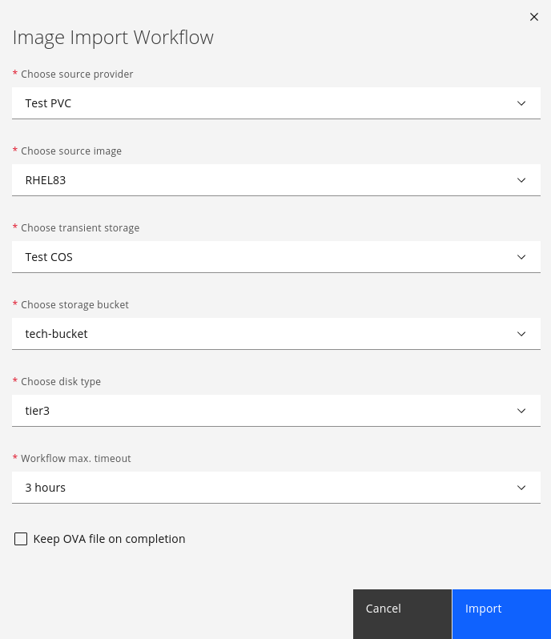

- Managing Providers
- Infrastructure Providers
- Refreshing Providers
- Tagging Multiple Providers
- Viewing a Provider
- Removing a Provider
- Viewing the Provider Timeline
- Viewing Hosts and Clusters
- Viewing Virtual Machines and Templates
- Configuration Management Providers
- Automation Management Providers
- Embedded Workflows
- Embedded Workflows UI
- Adding an Embedded Workflows Repository
- Viewing the List of Workflows in a Repository
- Refreshing Repositories
- Adding Credentials
- Authoring a workflow
- Viewing workflow details
- Creating a Service Dialog using an Embedded Workflow
- Creating Service Catalog Items using an Embedded Workflow
- Upgrading
- Ansible
- Embedded Workflows
- Credentials
- Tagging Ansible Playbooks, Repositories, and Credentials
- Optimizing Ansible Playbooks for ManageIQ
- Installing Roles on an Embedded Ansible Appliance
- Ansible Service Linking
- Callbacks in Multiple Appliance Environments
- Ansible Tower
- Working with an Ansible Tower Provider
- Adding an Ansible Tower Provider
- Refreshing an Ansible Tower Provider
- Viewing Ansible Tower Providers and Inventory
- Viewing Ansible Tower Configured Systems
- Executing an Ansible Tower Job or Workflow Template from a Service Catalog
- Executing an Ansible Tower Job Using a Custom Automate Button
- Ansible Tower
- Embedded Terraform (OpenTofu)
- Importing OpenTofu image on an appliance
- Usage of Embedded Terraform (OpenTofu)
- Terraform Enterprise
- Cloud Providers
- Refreshing Cloud Providers
- Tagging Cloud Providers
- Removing Cloud Providers
- Editing a Cloud Provider
- Viewing a Cloud Provider’s Timeline
- Physical Infrastructure Providers
- Image Import Workflows
- IBM PowerVC to IBM Power Systems Virtual Server
- Preparing ManageIQ hosting server (required once):
- Preparing IBM PowerVC Server (required once):
- Add a Cloud Object Storage provider in ManageIQ:
- Add an IBM Power Systems Virtual Server provider in ManageIQ:
- Add an IBM PowerVC provider in ManageIQ:
- Grant Image Import Permissions in ManageIQ:
- Enable Embedded Ansible in ManageIQ:
- Start the workflow
- Troubleshooting
- IBM PowerVC to IBM Power Systems Virtual Server
- Network Managers
- Adding or Viewing Network Providers
- Refreshing Network Providers
- Tagging Network Providers
- Removing Network Providers
- Viewing a Network Provider’s Timeline
- Using the Topology Widget for Network Providers
- Containers Providers
- Tagging Containers Providers
- Removing Containers Providers
- Editing a Containers Provider
- Hiding Environment Variables for Containers Providers
- Viewing a Containers Provider’s Timeline
- Storage Managers
Managing Providers
ManageIQ can manage a variety of external environments, which are known as providers and managers. A provider or manager is any system that ManageIQ integrates with for the purpose of collecting data and performing operations.
In ManageIQ, a provider is an external virtualization, cloud, or containers environment that manages multiple virtual machines or instances residing on multiple hosts. One example is Red Hat Virtualization, a platform that manages multiple hosts and virtual machines.
In ManageIQ, a manager is an external management environment that manages more than one type of resource. One example of a manager is OpenStack, which manages infrastructure, cloud, network, and storage resources.
This guide covers working with providers and managers in ManageIQ, which include:
-
Infrastructure providers
-
Configuration management providers
-
Automation management providers
-
Cloud providers
-
Physical infrastructure providers
-
Networking management providers
-
Container providers
-
Storage managers
For information on working with the resources that are contained by a provider or manager, see Managing Infrastructure and Inventory.
Infrastructure Providers
In ManageIQ, an infrastructure provider is a virtual infrastructure environment that you can add to a ManageIQ appliance to manage and interact with the resources in that environment. This chapter describes the different types of infrastructure providers that you can add to ManageIQ, and how to manage them. Infrastructure providers can be either discovered automatically by ManageIQ, or added individually.
The web interface uses virtual thumbnails to represent infrastructure providers. Each thumbnail contains four quadrants by default, which display basic information about each provider:
-
Number of hosts
-
Management system software
-
Currently unused
-
Authentication status
| Icon | Description |
|---|---|
| Validated: Valid authentication credentials have been added. | |
| Invalid: Authentication credentials are invalid. | |
 |
Unknown: Authentication status is unknown or no credentials have been entered. |
For information on managing specific infrastructure providers see the following.
Refreshing Providers
Refresh a provider to find other resources related to it. Use
Refresh after initial discovery to get the latest data about the
provider and the virtual machines it can access. Ensure the provider has
credentials to do this. If the providers were added using Discovery,
add credentials using  (Edit Selected Infrastructure Provider).
(Edit Selected Infrastructure Provider).
-
Browse to menu: Compute > Infrastructure > Providers.
-
Select the providers to refresh.
-
Click Configuration, and then (Refresh Relationships and Power States).
-
Click OK.
Tagging Multiple Providers
Apply tags to all providers to categorize them together at the same time.
-
Navigate to Infrastructure > Providers.
-
Check the providers to tag.
-
Click
 (Policy), and then (Edit Tags).
(Policy), and then (Edit Tags). -
In the Tag Assignment area, select a customer tag to assign from the first list, then select a value to assign from the second list.

-
Select more tags as required; click (Save).
Viewing a Provider
From a list of providers, you can review a specific provider by clicking on it. This displays various options to access provider information.
There are two methods of viewing an infrastructure provider’s details: the summary screen (default) and the dashboard screen. Use the summary and dashboard buttons to toggle between views.
Both the summary and dashboard screens contain a taskbar with Reload, Configuration, Policy, Monitoring, and Authentication buttons to manage the selected provider.
Provider Summary Screen.
The provider summary screen displays information about the provider in table format.
-
Provider accordion: Displays details about the provider’s Properties and Relationships on the sidebar. Click to expand these lists.
-
Provider summary: Displays a provider’s Properties, Status, Relationships, and Smart Management. Click on an item in the Relationships table to see more information about that entity.
Provider Dashboard Screen.

From the dashboard, you can view:
-
Number of clusters, hosts, virtual machines, templates, datastores, resource pools, and other entities on the provider. Click on an entity to see more information about that item.
-
Aggregate utilization for CPU, memory, and storage
-
Network I/O statistics
-
Trends for hosts and virtual machines discovered
To view the dashboard:
-
Browse to menu: Compute > Infrastructure > Providers.
-
Click the infrastructure provider to view.
-
To access the dashboard view, click (Dashboard view).
To return to the summary view, click (Summary view).
Removing a Provider
If a provider has been decommissioned or requires some troubleshooting, it might require deletion from the VMDB.
Deleting a provider removes the account information from ManageIQ console. You will no longer be able to view any associated history including chargeback reports generated for the deleted provider. Additionally, if ManageIQ is the database of record, deleting providers would become a major problem for the other systems relying on it for accurate and consistent billing information. Review all the dependencies carefully before deleting a provider.
-
Navigate to Compute > Infrastructure > Providers.
-
Select the check box for the provider to delete.
-
Click
 (Configuration), then
(Remove Infrastructure Providers from the VMDB).
(Configuration), then
(Remove Infrastructure Providers from the VMDB). -
Click (OK).
Viewing the Provider Timeline
View the timeline of events for the virtual machines registered to a provider.
-
Navigate to Compute > Infrastructure > Providers.
-
Click a provider.
-
Click
 (Monitoring), and then
(Monitoring), and then
 (Timelines)from the taskbar, or
from the provider accordion, click Properties > Timeline.
(Timelines)from the taskbar, or
from the provider accordion, click Properties > Timeline. -
From Options, customize the period of time to display and the types of events to see.

-
Use Show to select regular Management Events or Policy Events.
-
Use the Interval dropdown to select hourly or daily data points.
-
Use Date to type the date for the timeline to display.
-
If you select to view a daily timeline, use Show to set how many days back to go. The maximum history is 31 days.
-
The three Event Groups lists allow you to select different groups of events to display. Each has its own color.
-
From the Level list, select a Summary event, or a Detail list of events. For example, the detail level of a Power On event might include the power on request, the starting event, and the actual Power On event. If you select Summary, only the Power On event displays in the timeline.
-
Viewing Hosts and Clusters
Access a tree view of the hosts and clusters for a provider from the Provider Summary.
-
Navigate to Compute > Infrastructure > Providers.
-
Click the provider to view the hosts and clusters.
-
Click on the Relationships accordion, then click Hosts & Clusters.

Viewing Virtual Machines and Templates
Access a tree view of the virtual machines and templates for a provider from the Provider Summary.
-
Navigate to Compute > Infrastructure > Providers.
-
Click the provider to view the virtual machines and templates.
-
From accordion menu, click Relationships, then click VMs & Templates.
Configuration Management Providers
In ManageIQ, a configuration management provider is a systems management product that you can add to a ManageIQ appliance to manage the lifecycle of your resources. Configuration management providers are useful for uniformly applying changes and updates across providers, and for recording and reporting status and change activity. They can also help eliminate the confusion and error brought about by the existence of different providers.
This chapter describes the different types of configuration management providers available to ManageIQ, and how to manage them. Configuration management providers must be added individually to ManageIQ.
Automation Management Providers
In ManageIQ, an automation management provider is a management tool that integrates with ManageIQ to simplify automation operations for your resources. The following chapter describes the automation management providers that you can use with ManageIQ, and how to work with them.
ManageIQ provides automation management through the following features:
Automate enables real-time, bidirectional process integration. This embedded automate feature provides you with a method to implement adaptive automation for management events and administrative or operational activities.
Embedded Workflows provide the capability to simplify service catalog creation and improve the overall service catalog experience through a step-based automation system. Workflows can run docker containers to accomplish a task that the user requires as part of the state machine. Workflows are imported from Git repository content into ManageIQ where they are made available for users to run. Embedded Workflows are an alternative to the Embedded Automate capability for authoring and running automation. With Embedded Workflows, you can continue to use the Embedded Automate feature for service catalog creation and management.
Ansible integration delivers out-of-the-box support for backing service, alert, and policy actions by using Ansible playbooks. Sync your existing playbook repositories with ManageIQ, add credentials to access providers, and create service catalog items for actions ranging from creating and retiring VMs, updating security software, or adding more disks when space runs low.
Ansible Tower is a management tool that is integrated with ManageIQ, designed to help automate infrastructure operations utlizizing existing Ansible Tower providers in your inventory. ManageIQ allows you to execute Ansible Tower jobs by using service catalogs and Automate. Using Ansible Tower, you can schedule Ansible playbook runs and monitor current and historical results, allowing for troubleshooting or identification of issues before they occur.
Terraform Enterprise is an application that helps teams use Terraform together. It manages Terraform runs in a consistent and reliable environment.
Embedded Workflows
Embedded Workflows provide the capability to simplify service catalog creation and improve the overall service catalog experience through a step-based automation system. Workflows can run docker containers to accomplish a task that the user requires as part of the state machine. Workflows are imported from Git repository content into ManageIQ where they are made available for users to run.
Embedded Workflows are an alternative to the Embedded Automate capability for authoring and running automation. With Embedded Workflows, you can continue to use the Embedded Automate feature for service catalog creation and management.
Embedded Workflows UI
For the Embedded Workflows feature, the following pages are available in the UI, which you can use to access and work with workflows. To view these pages, go to Automation > Embedded Workflows and select the page.

-
Workflows
This UI page includes a summary of the available workflows. You can use different views to review the workflows:
- Text view, which is the raw representation (JSON or YAML) of the Amazon State Languages (ASL) code.
- Graph view, which shows a visual representation of the workflow structure.
-
Repositories
This page lists, and provides a summary of, the added embedded workflow repositories. From this page, you can add, update, and remove repositories. When a repository is added and synchronized, any workflows that are found in the repository can be viewed on the Workflows UI page.
-
Credentials
Credentials are used by ManageIQ for any authentication that is required when running embedded workflows, and when importing workflows from a version control system.
This page lists, and provides a summary of, the credentials for accessing and using embedded workflows. From this page, you can add, update, and delete credentials.
In addition to the Embedded Workflows UI, Embedded Workflows can also be used in Service Dialogs for dynamic dialog fields and with Service Catalog Items for provisioning, reconfiguration, and retirement entrypoints.
-
Service Dialog
When creating a service dialog, fields that are dynamic include the option for using Embedded Workflows or Embedded Automate.

-
Service Catalog Items
The provisioning, reconfigure, and retirement entry points include the option for using Embedded Workflows or Embedded Automate. You can set the point field to the workflow that you want to use for any, or all, of the three service entry points.

Adding an Embedded Workflows Repository
As a starting point to begin using workflows, you must first add a repository that includes your workflows.
To add a repository, complete the following steps:
-
Click Automation > Embedded Workflows > Repositories > Configuration > Add New Repository.

-
Enter the repository name in the Name field.
-
Add a description for the repository in the Description field.
-
Enter a Git repository URL for the repository in the URL field. The Git repository URL does not need to be a GitHub repository.
-
If you are adding a repository that requires authentication then add an SCM (Source Control Management) credential for accessing the repository. Select that credential for this repository from the SCM Credentials dropdown menu. These credentials are used in different ways within embedded workflows.
Source Control credentials have several attributes that can be configured:
- Username: The username to use in conjunction with the source control system.
- Password: The password to use in conjunction with the source control system.
- Private key passphrase: If the SSH private key used is protected by a passphrase, you can configure a key passphrase for the private key.
- Private Key: Copy or drag and drop the actual SSH Private Key to be used to authenticate the user to the source control system by using SSH.
-
Provide a branch name in the SCM Branch field for the branch that you want to pull.
-
Click Save. Upon saving, the repository is imported and scanned for any included workflows (any Amazon States Language
.aslfiles). -
Confirm that the synchronization with your repository is successful by viewing the list of workflows that are detected for the repository.
To view the added repositories, return to the Automation > Embedded Workflows > Repositories page. The list of repositories is displayed. To view a summary of details for a repository, click the repository to open the Summary page for that repository.
If you need to edit a repository, select the repository from the list of repositories. Then, click Configuration > Edit this Repository. After you complete your edits, click Save.
If you need to delete a repository, select the repository from the list of repositories. Then, click Configuration > Remove this Repository from Inventory.
Viewing the List of Workflows in a Repository
When your repository is added, the repository shows in the Repositories list. You can now click the entry for the repository to open it so that you can view the imported workflows. If any workflows are found, click the corresponding number to view the list of workflows.
Alternatively, click Automation > Embedded Workflows. Then, click Workflows to see the list of workflows across all repositories.
Refreshing Repositories
ManageIQ allows you to refresh a targeted repository or all repositories in your inventory to ensure that your workflows are current.
Refresh a targeted repository:
-
Browse to the menu: Automation > Embedded Workflows > Repositories.
-
Click a repository.
-
Click Configuration, then (Refresh this Repository).
Alternately, you can refresh some or all repositories from the list view:
-
Browse to the menu: Automation > Embedded Workflows > Repositories.
-
Check those repositories to refresh. Click Check All to select all repositories.
-
Click Configuration, then (Refresh Selected Workflow Repositories).
Adding Credentials
Credentials are used by ManageIQ for any authentication that is required when running embedded workflows, or when importing workflows from a version control system.
ManageIQ can store credentials that are used by embedded workflows. Credentials that are saved in ManageIQ are mapped to values in the Credentials field of your Workflow and are made available to the container with a workflow when the workflow runs.
-
Browse to the menu: Automation > Embedded Workflows > Credentials.
-
Click Configuration, then
 (Add New Credential).
(Add New Credential). -
Provide a Name for the credential.
-
Select the Credential Type. More fields appear depending on the type chosen.
-
Click Add.
To view the added credentials, return to the Automation > Embedded Workflows > Credentials page. The list of credentials is displayed. To view a summary of details for a credential, click the credential to open the Summary page for that credential.
If you need to edit a credential, select the credential from the list of credentials. Then, click Configuration > Edit this Credential. After you complete your edits, click Save.
If you need to delete a credential, select the credential from the list of credentials. Then, click Configuration > Remove selected Credentials from Inventory.
Credential Types
Each credential type that is used by ManageIQ for embedded workflows is detailed in the following sections.
SCM
SCM (source control Management) credentials are used with Projects to clone and update local source code Git repositories. Source Control credentials have several attributes that can be configured:
-
Username: The username to use in conjunction with the source control system.
-
Password: The password to use in conjunction with the source control system.
-
Private key passphrase: If the SSH private key used is protected by a passphrase, you can configure a key passphrase for the private key.
-
Private Key: Copy or drag-and-drop the actual SSH Private Key to be used to authenticate the user to the source control system by using SSH.
Authoring a workflow
You can configure workflows for use in the following areas during service catalog creation:
- Dynamic dialog fields - You (or your users) can attach workflows to a field so that the field becomes populated or refreshed with the results from the running of the workflow.
- Service Entry Points - You (or your users) can set and use workflows for provisioning, reconfiguring, and retiring services.
You can create and use embedded workflows as needed to not only change parts of the provisioning process, but also to automate other operational tasks.
Workflows must be authored in Amazon State Languages (ASL) format. As part of authoring a workflow, you (or your users) can build container images that are able to perform any tasks that are required in any language that you like. You can use these images during Task states in your workflows.
-
Define the code for the workflow. If your workflow requires the use of any credentials or parameters to be specified, ensure that they are passed in the code.
Within the workflow code, you need to specify the states that your workflow requires, including any next steps. For
Tasktype steps in the workflow, a docker container is called. The container defines what happens for that Task state. For example, a docker container can run to clone a template. If your states require parameters or credentials, you can specify them in your state definitions.The workflow code must be in the Amazon States Language (ASL) format and follow its supported specifications. For more information about Amazon States Language and its specification, see Amazon States Language Guide.
Note: The current implementation of the Amazon States Language does not support certain Map states. For more information, see Unsupported Amazon States Language features.
#### Unsupported Amazon States Language features
The following features of Amazon States Language are not supported by Floe:
- Map State Fields:
- ItemReader
- ResultWriter
- Map State Fields:
-
Build the docker containers that are required for the workflow.
When you have the code for your task resource written, you need to bundle it into a docker image. You can bundle the code by creating a standard Dockerfile and building the image (https://docs.docker.com/engine/reference/commandline/build/). Then, you can push the image to a registry, which makes the image available to be used by ManageIQ. When you have pushed your images to an image registry, you can add the registry to ManageIQ.
Pull secrets for containers are used differently between appliances and the OpenShift Container Platform (OCP). These differences are outlined in the following sections.
-
Use “builtin” runner methods from the ManageIQ Task Runner
In addition to the
docker://runner which can run any container you want, there are also builtin runner methods for some common tasks like executing an http call or sending an email.-
manageiq://http- Execute any HTTP actionParameters:
-
Method(required) - HTTP method name. Permitted values:GET,POST,PUT,DELETE,HEAD,PATCH,OPTIONS, orTRACE -
Url(required) - URL to execute the HTTP call to -
Headers- Hash of unencoded HTTP request header key/value pairs. -
QueryParameters- URI query unencoded key/value pairs. -
Body- HTTP request body. Depending on Encoding this can be a String or a Hash of key/value pairs. -
Ssl- SSL options-
Verify- Boolean - Verify SSL certificate. Defaults totrue -
VerifyHostname- Boolean - Verify SSL certificate hostname. Defaults totrue -
Hostname- String - Server hostname for SNI. -
CaFile- String - Path to a CA file in PEM format. -
CaPath- String - Path to a CA directory. -
VerifyMode- Integer - OpenSSL constant.VERIFY_NONE=> 0,VERIFY_PEER=> 1,VERIFY_FAIL_IF_NO_PEER_CERT=> 2,VERIFY_CLIENT_ONCE=> 4, -
VerifyDepth- Integer - Maximum depth for the certificate chain validation. -
Version- Integer - SSL Version. -
MinVersion- Integer - Minimum SSL Version. -
MaxVersion- Integer - Maximum SSL Version. -
Ciphers- String - Ciphers supported.
-
-
Proxy-
Uri- String - URI of the proxy. -
User- String - User for the proxy. -
Password- String - Password for the proxy
-
-
OptionsTimeoutReadTimeoutOpenTimeoutWriteTimeout-
Encoding- String-
JSON- JSON encodes the request and decodes the response
-
-
-
manageiq://email- Send an email using the configured SMTP serverParameters:
-
To- Array of recipient email addresses, defaults to service requester email -
From- Sender email address, defaults to smtp.from Setting -
Subject- Email Subject string -
Cc- Array of recipients to carbon-copy -
Bcc- Array of recipients to blind-carbon-copy -
Body- The body of the email -
Attachment- A hash with the filename as the key and the content as the value
-
-
manageiq://embedded_ansible- Execute an ansible playbook with EmbeddedAnsibleIdentifying a playbook: You must identity a playbook by either:
PlaybookId- This is the database identifier of theConfigurationScriptor
RepositoryUrl,RepositoryBranch, andPlaybookNameParameters:
-
RepositoryUrl- URL of the configuration script source identifying the repository where the playbook resides -
RepositoryBranch- Branch of the configuration script source where the playbook resides -
PlaybookName- Name of the playbook -
PlaybookId- Integer - Database ID of theConfigurationScript -
Hosts- Array - hostnames to target with the playbook -
ExtraVars- Hash - key/value pairs that will be passed as extra_vars -
BecomeEnabled- Boolean - If playbook should activate privilege escalation, defaults to false -
Timeout- Integer - Minutes for how long to allow the playbook to run for -
Verbosity- Integer - Ansible verbosity level 0-5 -
CredentialId- Integer - Database ID of an ansible credential -
CloudCredentialId- Integer - Database ID of an ansible cloud credential -
NetworkCredentialId- Integer - Database ID of an ansible network credential -
VaultCredentialId- Integer - Database ID of an ansible vault credential
-
-
manageiq://provision_execute- Execute an MiqProvision taskThis can be used for a VM Provision Service Catalog item in place of automate. No explicit parameters are required, as state input is used as the provision options.
-
Running an Embedded Workflow on Appliances
-
On appliances,
podmanis used to execute the container so use podman login as themanageiquser.# su manageiq $ podman login docker.io Username: Password: Login Succeeded!If you use the –root flag in the podman pull, images are pulled to a local directory ‘/var/www/miq/vmdb/data/containers/storage’ as in the example
podman pull <repository>/<image>:<tag> --root /var/www/miq/vmdb/data/containers/storageIt is worth noting that the default /home/manageiq partition has insufficient space to store large images.
You can use any repository to store your images, for example you can use docker.io access token so that the token does not expire.
-
Provide an image pull secret to a podified Kubernetes container, and then add it to a service account
In order to pull an image from a private registry you have to provide an
ImagePullSecretto your containers, see Pull an Image from a Private Registry. ManageIQ uses a service account called manageiq-default to run containers for your workflows. You can add anImagePullSecretto this service account by following Add Image Pull Secrets to a service account.
Running an Embedded Workflow on the OpenShift Container Platform (OCP)
If the user is running an embedded workflow on OCP, and is using a docker repository requiring a custom pull secret for their container images, the following steps need to be carried out.
-
Create a pull secret for the repository in question in the same namespace as ManageIQ, for example:
oc create secret docker-registry <pull-secret-name> --docker-server=<docker-server> --docker-username=<docker-username> --docker-password=<docker-password> -
Add this pull secret to the manageiq-default, for example:
oc secret link manageiq-default <pull-secret-name> --for=pull
Example: Provisioning Workflow
{
"Comment": "Provision a VMware VM.",
"StartAt": "CloneTemplate",
"States": {
"CloneTemplate": {
"Type": "Task",
"Resource": "docker://docker.io/manageiq/workflows-examples-clone-template:latest",
"Next": "CheckTaskComplete",
"Credentials": {
"api_user.$": "$.api_user",
"api_password.$": "$.api_password",
"vcenter_user.$": "$.vcenter_user",
"vcenter_password.$": "$.vcenter_password"
},
"Parameters": {
"PROVIDER_ID.$": "$.dialog_provider",
"VERIFY_SSL": false,
"TEMPLATE.$": "$.dialog_source_template",
"NAME.$": "$.dialog_vm_name"
}
},
"CheckTaskComplete": {
"Type": "Task",
"Resource": "docker://docker.io/manageiq/workflows-examples-check-task-complete:latest",
"Next": "PollTaskComplete",
"Credentials": {
"vcenter_user.$": "$.vcenter_user",
"vcenter_password.$": "$.vcenter_password"
},
"Parameters": {
"VCENTER_HOST.$": "$.vcenter_host",
"TASK.$": "$.task"
}
},
"PollTaskComplete": {
"Type": "Choice",
"Choices": [
{
"Variable": "$.state",
"StringEquals": "success",
"Next": "PowerOnVM"
},
{
"Variable": "$.state",
"StringEquals": "running",
"Next": "RetryState"
},
{
"Variable": "$.state",
"StringEquals": "error",
"Next": "FailState"
}
],
"Default": "FailState"
},
"RetryState": {
"Type": "Wait",
"Seconds": 5,
"Next": "CheckTaskComplete"
},
"PowerOnVM": {
"Type": "Task",
"Resource": "docker://docker.io/manageiq/workflows-examples-power-on-vm:latest",
"Next": "SuccessState",
"Credentials": {
"vcenter_user.$": "$.vcenter_user",
"vcenter_password.$": "$.vcenter_password"
},
"Parameters": {
"VCENTER_HOST.$": "$.vcenter_host",
"VM.$": "$.vm"
}
},
"FailState": {
"Type": "Fail",
"Error": "FailStateError",
"Cause": "No Matches!"
},
"SuccessState": {
"Type": "Succeed"
}
}
}
Credentials
ManageIQ provides a mechanism for securely passing credentials to your running workflows. Credentials should never be set statically in your workflow definition.
Long lived credentials like usernames and passwords should be defined as Mapped Credentials as described in Adding Credentials.
Short lived credentials such as bearer tokens which are obtained while the workflow is running can be set as state output and stored securely in the Credentials field for further states. This can be accomplished by using ResultPath with a path starting with $$.Credentials. This will set the output of the state in the Credentials payload.
For an example lets say we have a State which takes a username and password and outputs a bearer token to be used later on:
"Login": {
"Type": "Task",
"Resource": "docker://login:latest",
"Credentials": {
"username.$": "$$.Credentials.username",
"password.$": "$$.Credentials.password"
},
"ResultPath": "$$.Credentials",
"Next": "NextState"
}
If the output of the docker image is {"bearer_token":"abcd"} then we will be able to use this in the next state like so:
"NextState": {
"Type": "Task",
"Resource": "docker://do-something:latest",
"Credentials": {
"token.$": "$$.Credentials.bearer_token"
}
}
All of the normal Input/Output processing still applies so if you need to manipulate the output you can use ResultSelector. Say for example our login docker image outputs the token as {"result":"abcd"} but we want to store it as "bearer_token". We can use ResultSelector to change this:
"Login": {
"Type": "Task",
"Resource": "docker://login:latest",
"Credentials": {
"username.$": "$$.Credentials.username",
"password.$": "$$.Credentials.password"
},
"ResultSelector": {
"bearer_token.$": "$.result"
},
"ResultPath": "$$.Credentials",
"Next": "NextState"
}
We can also store the result in a parent node for organization:
"Login": {
"Type": "Task",
"Resource": "docker://login:latest",
"Credentials": {
"username.$": "$$.Credentials.username",
"password.$": "$$.Credentials.password"
},
"ResultPath": "$$.Credentials.VMware",
"Next": "NextState"
}
And then access it like:
"NextState": {
"Type": "Task",
"Resource": "docker://do-something:latest",
"Credentials": {
"token.$": "$$.VMware.bearer_token"
}
}
If you have a mapped credential and your state overwrites its, a new non-mapped entry will be created and the original mapped credential will be left intact.
Viewing workflow details
Once a workflow is imported, you can view the details, such as to verify the payload. To view the details for a workflow:
-
Go to the menu: Automation > Embedded Workflows. Then, click Workflows to see the workflows list.
-
Click a workflow. The default Text view of the workflow opens where you see the code content.

Alternatively, click the Graph tab to see a graph of the same data.

-
If your workflow has credential fields, create a workflow credential for each of the fields. For more information about creating a credential, see Adding Credentials.
-
Map any workflow credentials to the workflow.
-
Go to the menu: Automation > Embedded Workflows. Then, click Workflows to see the workflows list.
-
Select the workflow that includes the credentials that you need to map.
-
Click Configuration > Map Credentials to this Workflow.
The table that displays on the Map Credentials page displays all the current mappings for the selected workflow. Verify that the list of credential identifiers includes all of the identifiers that are in the workflow payload.
-
Use the drop-down fields to map one or more credentials for the workflow. Verify that the table is updated with the correct information.
-
Click Save.
-
Creating a Service Dialog using an Embedded Workflow
Fields that are Dynamic offer the choice of Embedded Workflows in addition to the original Embedded Automate.
Dialogs are the part of ManageIQ that you interface with when you order services.
- To open a service dialog, click Automation > Embedded Automate > Customization.
- From the Service Dialog section, review the list of created dialogs. Click one of the dialogs to view the details.
-
Click Edit the dialog. You can edit the Name, Provider, and Template.
When you select to edit any of the dropdown settings, you can see a dynamic option. Toggle to On to make sure it is enabled.
-
Click the Options tab. You can now select between Embedded Automate and Embedded Workflows in the Automation field.
If you choose Embedded Workflows, you can select the workflow to run. Complete the remaining fields and click Save when you complete the form. You can chain dialog fields together by using Fields to refresh, which lets one dialog field trigger the run of another when there are interdependencies. When you order a service catalog, any dynamic dialogs that are backed by embedded workflows run in the background to populate the dialogs.
Creating Service Catalog Items using an Embedded Workflow
You can create a generic service catalog item that uses an embedded workflow. To use previously set up workflows and to view a service catalog item, you need to order the item. Complete the following steps to order a service catalog item that uses embedded workflows:
- Click Services > Catalogs.
-
The Service Catalogs section opens and you see the existing Service Catalogs. If you want to order one, click it and then Order.

Complete the fields for your specified dialog. Then, click Submit.
-
If you want to know more about the item first or to edit it, click the Catalogs section, and then click that item that is created. Click Configuration > Edit this item.
- When you complete all your edits, click Save.
-
Confirm that you can order the service catalog item and that it runs the workflows to drive the dynamic dialog dropdown.
The list of services and requests is shown when the catalog item is submitted. Clicking the request shows the execution status, including any embedded workflows.
Upgrading
If you wrote a workflow with floe prior to v0.17.0 you might have to update your workflow content. You can check your floe version by using bundle info floe
- The Credentials Task property has changed to use
$$.Credentialsto access the credentials payload,$.will use state input which is consistent with the rest of Input/Output processing.ResultPathalso has to be updated to set credentials to$$.Credentials.
Example:
{
"Type": "Task",
"Credentials": {"password.$": "$.Password"},
"ResultPath": "$.Credentials"
}
Becomes:
{
"Type": "Task",
"Credentials": {"password.$": "$$.Credentials.password"},
"ResultPath": "$$.Credentials"
}
- Nested hashes no longer require the key to have a
.$suffix to perform interpolation
Example:
{
"Type": "Pass",
"Result": {
"Body.$": {"foo.$": "$.bar"}
}
}
Becomes:
{
"Type": "Pass",
"Result": {
"Body": {"foo.$": "$.bar"}
}
}
Ansible
Ansible integrates with ManageIQ to provide automation solutions, using playbooks, for Service, Policy and Alert actions. Ansible playbooks consist of series of plays or tasks that define automation across a set of hosts, which is known as the inventory.
Ranging from simple to complex tasks, Ansible playbooks can support cloud management:
-
Services - allow a playbook to back a ManageIQ service catalog item.
-
Control Actions - ManageIQ policies can execute playbooks as actions based on events from providers.
-
Control Alerts - set a playbook to launch prompted by a ManageIQ alert.
Ansible is built into ManageIQ so there is nothing to install. The basic workflow when using Ansible in ManageIQ is as follows:
-
Enable the Embedded Ansible server role.
-
Add a source control repository that contains your playbooks.
-
Establish credentials with your inventory.
-
Back your services, alerts, and policies using available playbooks.
Enabling the Embedded Ansible Server Role
In ManageIQ, the Embedded Ansible role is disabled by default. Enable this server role to utilize Ansible Automation Inside.
Note: Configure your ManageIQ appliance network identity (hostname/IP address) before enabling the Embedded Ansible server role. Restart the evmserverd service on the appliance with the enabled Embedded Ansible server role after making any changes to the hostname or IP address.
-
Browse to the settings menu, then Configuration > Settings.
-
Select the desired server under Zones.
-
Set the Server Role for Embedded Ansible to On.
Verifying the Embedded Ansible Worker State
Verify that the Embedded Ansible worker has started to utilize its features.
-
Browse to the settings menu, then Configuration > Diagnostics and click on the desired server.
-
Click on the Roles by Servers tab.
A table of all workers and current status will appear from which you can confirm the state of your embedded Ansible worker.
Adding a Playbook Repository
Add a repository so that ManageIQ can discover and make available your playbooks.
-
Browse to menu: Automation > Ansible > Repositories.
-
Click Configuration, then
(Add New Repository). -
Provide a Repository Name in the Name field.
-
Add a description for the repository in the Description field.
-
Add a URL or IP Address for the repository.
-
Select the appropriate SCM Credentials from the drop-down menu.
-
Provide a branch name in the SCM Branch field.
-
Click Save.
Once you have synced a repository, its playbooks will become available to ManageIQ.
Refreshing Repositories
ManageIQ allows you to refresh a targeted playbook repository or all repositories in your inventory to ensure your playbooks are current.
Refresh a targeted repository:
-
Browse to menu: Automation > Ansible > Repositories.
-
Click on a repository.
-
Click Configuration, then (Refresh this Repository).
Alternately, you can refresh some or all repositories from the list view:
-
Browse to menu: Automation > Ansible > Repositories.
-
Check those repositories to refresh. Click Check All to select all repositories.
-
Click Configuration, then (Refresh Selected Ansible Repositories).
Credentials
Credentials are utilized by ManageIQ for authentication when running Ansible playbooks against machines, synchronizing with inventory sources, and importing project content from a version control system.
Adding Credentials
ManageIQ can store credentials used by playbooks. Credentials saved in ManageIQ are matched and executed with a playbook when run.
-
Browse to menu: Automation > Ansible > Credentials.
-
Click Configuration, then
(Add New Credential). -
Provide a Name for the credential.
-
Select the Credential Type. Additional fields will appear depending on the type chosen.
- Vault Password: Ansible Vault credentials have only the Vault Password attribute that may be configured. For more information on Ansible Vault, see Using Vault in playbooks.
-
Click Add.
Credential Types
Each credential type used by ManageIQ is detailed in the following sections.
Machine
Machine credentials enable ManageIQ to invoke Ansible on hosts under your management. Just like using Ansible on the command line, you can specify the SSH username, optionally provide a password, an SSH key, or a key password. They define SSH and user-level privilege escalation access for playbooks, and are used when running playbooks on a remote host.
-
Username: The username to be used for SSH authentication.
-
Password: The actual password to be used for SSH authentication.
-
SSH Private Key: Copy or drag-and-drop the SSH private key for the machine credential.
-
Private Key Passphrase: If the SSH Private Key used is protected by a password, you can configure a Key Password for the private key.
-
Privilege Escalation: Specifies the type of escalation privilege to assign to specific users. Options include sudo, su, pbrun, pfexec.
-
Privilege Escalation Username: Enter the username to use with escalation privileges on the remote system.
-
Privilege Escalation Password: Enter the actual password to be used to authenticate the user via the selected privilege escalation type on the remote system.
Network
Network credentials are used by Ansible networking modules to connect to and manage networking devices.
Network credentials have several attributes that may be configured:
-
Username: The username to use in conjunction with the network device.
-
Password: The password to use in conjunction with the network device.
-
Authorize: Select this from the Options field to add an Authorize password which signs the RSA key with a password.
-
Authorize password: If Authorize is checked, enter a password in the Authorize Password field.
-
SSH Key: Copy or drag-and-drop the actual SSH Private Key to be used to authenticate the user to the network via SSH.
-
Private key passphrase: The actual passphrase for the private key to be used to authenticate the user to the network via SSH.
SCM
SCM (source control) credentials are used with Projects to clone and update local source code repositories from a remote revision control system such as Git, Subversion, or Mercurial.
Source Control credentials have several attributes that may be configured:
-
Username: The username to use in conjunction with the source control system.
-
Password: The password to use in conjunction with the source control system.
-
Private key passphrase: If the SSH private key used is protected by a passphrase, you may configure a key passphrase for the private key.
-
Private Key: Copy or drag-and-drop the actual SSH Private Key to be used to authenticate the user to the source control system via SSH.
Amazon
Selecting this credential type enables synchronization of cloud inventory with Amazon Web Services.
-
Access Key: User credentials that allow for programmatic calls to Amazon Web Services.
-
Secret Key: The secret key that corresponds to the user access key.
-
STS Token: Token generated by Amazon Web Services Security Token Service.
Azure
Selecting this credential type enables synchronization of cloud inventory with Microsoft Azure.
Microsoft Azure credentials have several attributes to configure:
-
Username: The username to use to connect to the Microsoft Azure account.
-
Password: The password to use to connect to the Microsoft Azure account.
-
Subscription ID: The Subscription UUID for the Microsoft Azure account.
-
Tenant ID: The Tenant ID for the Microsoft Azure account.
-
Client Secret: The Client Secret for the Microsoft Azure account.
-
Client ID: The Client ID for the Microsoft Azure account.
OpenStack
Selecting this credential type enables synchronization of cloud inventory with Red Hat OpenStack Platform.
OpenStack credentials have several attributes that may be configured:
-
Username: The username to use to connect to OpenStack.
-
Password (API Key): The password or API key to use to connect to OpenStack.
-
Host (Authentication URL): The host to be used for authentication.
-
Project (Tenant Name): The Tenant name or Tenant ID used for OpenStack. This value is usually the same as the username.
-
Domain name: The FQDN to be used to connect to OpenStack.
Red Hat Virtualization
Selecting this credential type enables synchronization of cloud inventory with Red Hat Virtualization.
Red Hat Virtualization credentials have several attributes that may be configured:
-
Username: The username to use to connect to Red Hat Virtualization.
-
Password: The password to use to connect to Red Hat Virtualization.
-
Host (Authentication URL): The host to be used for authentication.
Important: Enter in Host the Red Hat Virtualization provider URL, followed by the path
/ovirt_engine/api. Example:https://your.rhv.com/ovirt_engine/apiFor more information on the Ansible Roles that are available for Red Hat Virtualization, see Ansible Roles.
VMware
Selecting this credential type enables synchronization of inventory with VMware vCenter.
Important: If both ManageIQ and a VMware provider are located in the same IPv6-only network, use a DNS-resolvable hostname for the VMware provider in the vCenter Host field when adding credentials.
VMware credentials have several attributes that may be configured:
-
Username: The username to use to connect to vCenter.
-
Password: The password to use to connect to vCenter.
-
vCenter Host: The vCenter hostname or IP address to connect to.
Note: If the VMware guest tools are not running on the instance, VMware inventory sync may not return an IP address for that instance.
Tagging Ansible Playbooks, Repositories, and Credentials
Apply tags to Ansible playbooks, repositories, and credentials to categorize them. Tagging enables administrators to limit users to view those Ansible elements that have been enabled for that set of user permissions.
Adding Tags to Ansible Playbooks
-
Navigate to Automate > Ansible > Playbooks.
-
Select the checkboxes for the Ansible playbooks to tag.
-
Click Policy, and then
(Edit Tags). -
Select a customer tag to assign from the first list.
-
Select a value to assign from the value list.
-
Click Save.
Adding Tags to Ansible Repositories
-
Navigate to Automate > Ansible > Repositories.
-
Select the checkboxes for the Ansible repositories to tag.
-
Click Policy, and then
(Edit Tags). -
Select a customer tag to assign from the first list.
-
Select a value to assign from the value list.
-
Click Save.
Adding Tags to Ansible Credentials
-
Navigate to Automate > Ansible > credentials.
-
Select the checkboxes for the Ansible credentials to tag.
-
Click Policy, and then
(Edit Tags). -
Select a customer tag to assign from the first list.
-
Select a value to assign from the value list.
-
Click Save.
Optimizing Ansible Playbooks for ManageIQ
Ansible is a simple model-driven configuration management, multi-node deployment, and remote-task execution system. When designing playbooks for use with ManageIQ it is helpful to utilize solutions within the playbook itself to ensure optimal implementation of playbook-backed services or automated processes.
This section is intended to complement the existing documentation on Ansible playbooks and guide administrators through optimizing playbooks for use with ManageIQ.
Installing Roles on an Embedded Ansible Appliance
Roles are ways of automatically loading certain variable files, tasks, and handlers based on a known file structure. Grouping content by roles also allows for easy sharing of roles with other users. Install roles on a ManageIQ appliance with the Embedded Ansible server role activated to optimize playbooks.
When using this role in a playbook on a ManageIQ appliance, add an empty roles directory at the root of the playbook. In the roles directory, include a requirements.yml file with the following contents:
---
- src: <ansible-galaxy-role>
ManageIQ automatically installs the role once it sees the requirements.yml file in the playbook.
Ansible Service Linking
ManageIQ provides a module allowing inventoried resources such as
virtual machines created using Ansible playbooks to link back to the
services used to generate them. During service ordering of a playbook
the add_provider_vms module will allow the playbook to connect back to
the worker appliance and identify the provider resources it was
responsible for generating. Once linked, the newly generated resources
are available to ManageIQ’s life cycle management
features.
Linking VMs back to the service that created it requires implementing the following tasks in the playbook used for provisioning:
-
Create a resource and register it.
-
Link the service using the
add_provider_vmsmethod to the newly created resource.
Example: Linking a virtual machine to a service
In the following playbook task examples, a virtual machine is deployed to Amazon EC2 and linked back to the service. Examples are provided for linking the resource to its service by both an href slug and as an object.
Note:
-
This example utilizes the `syncrou.manageiq-vmdb` role. This role allows ManageIQ users to modify and/or change VMDB objects using an Ansible playbook. For information on implementing and utilizing roles when writing Ansible playbooks for ManageIQ, see Installing Ansible Roles.
-
For more information on Ansible Galaxy and roles, see the Ansible Galaxy documentation.
-
Note the provider ID in order to successfully link to the service.
-
Create and register the resource.
- name: Create Ec2 Instance ec2: key_name: "" instance_tags: {Name: ""} group_id: "" instance_type: "" region: "" image: "" wait: yes count: 1 vpc_subnet_id: "" assign_public_ip: yes register: ec2 -
Call the
add_provider_vmsmethod as an action to link to the service via an href slug or an object.- name: Service Linking via an href slug manageiq_vmdb: href: "href_slug::services/80" action: add_provider_vms data: uid_ems: - "" provider: id: 24 - name: Service Linking via an object manageiq_vmdb: vmdb: "" action: add_provider_vms data: uid_ems: - "" provider: id: 24
Modifying the Automate Workspace Using the manageiq-automate Role.
The manageiq-automate role allows users of ManageIQ Automate to modify and add to the automate workspace via an Ansible playbook.
Note: When using this role in a playbook on a ManageIQ appliance with Embedded Ansible activated, add an empty roles directory at the root of the playbook. In the roles directory, include a requirements.yml file with the following contents:
---
- src: syncrou.manageiq-automate
ManageIQ will automatically install the role once it sees the requirements.yml file in the playbook.
Role Variables
The manageiq_automate role employs the following variables when implemented in a playbook run on a ManageIQ appliance. Variables are defined in defaults/main.yml and vars/main.yml.
auto_commit: By default is set to True. If set to False it does not auto commit back to ManageIQ each call to a set_ method in the manageiq_automate module.
manageiq_validate_certs: By default is set to True. If passed in with extra_vars or assigned in the playbook variables then the lookup allows self-signed certificates to be used when using SSL REST API connection URLs.
Example Playbook
The following example utilizes the manageiq-automate role. Using variable substitution, playbook tasks retrieve method parameters which are then used to modify object attributes. A final task uses the set_retry module to update the retry interval.
- name: Siphon Method Parameters into an object
hosts: localhost
connection: local
vars:
- auto_commit: True
- object: root
- interval: 600
gather_facts: False
roles:
- syncrou.manageiq-automate
tasks:
- name: "Get the list of Method Parameters"
manageiq_automate:
workspace: ""
get_method_parameters: yes
register: method_params
- name: "Set attributes"
manageiq_automate:
workspace: ""
set_attributes:
object: ""
attributes: ""
- name: Set Retry
manageiq_automate:
workspace: ""
set_retry:
interval: ""
Callbacks in Multiple Appliance Environments
In a ManageIQ multiple appliance environment, enable the Embedded
Ansible server role on a dedicated ManageIQ appliance. Add
store_session:sql to Ansible playbooks to ensure successful callbacks
to ManageIQ appliances in a multiple appliance
environment.
Ansible Tower
Ansible Tower is a management tool integrated with ManageIQ, designed to help automate infrastructure operations. ManageIQ allows you to execute Ansible Tower jobs or workflows using service catalogs and Automate. No custom configuration or Ruby scripting is needed in ManageIQ, as configuration is done in Ansible Tower using playbooks.
You can use the large library of existing Ansible playbooks as ManageIQ state machines to automate tasks such as deployments, backups, package updates, and maintenance in your ManageIQ environment. This can be particularly useful for quickly applying changes across large environments with many virtual machines or instances.
Using Ansible Tower, you can schedule Ansible playbook runs and monitor current and historical results, allowing for troubleshooting or identification of issues before they occur.
ManageIQ supports Ansible Tower API v2 provider integration.
Working with an Ansible Tower Provider
The basic workflow when using ManageIQ with an Ansible Tower provider is as follows:
-
Create an Ansible playbook which performs a specific task.
-
A new Ansible Tower job template is created from the playbook (or workflow template created from disparate jobs), which is then retrieved by ManageIQ.
-
From the Ansible Tower job or workflow template, create a new catalog item in ManageIQ, optionally with a service dialog that allows the user to enter parameters if needed.
-
The user orders the service from the ManageIQ user interface, and fills out any additional arguments (for example, limiting the task to run on a specific set of virtual machines).
-
The job or workflow executes.
Notes:
-
For more information about Ansible playbooks, see the Ansible playbook documentation.
-
For more information about worklows, see Workflows in the Ansible Tower User Guide.
Adding an Ansible Tower Provider
To access your Ansible Tower inventory from ManageIQ, you must add Ansible Tower as a provider.
Notes:
-
Ensure ENABLE HTTP BASIC AUTH is set to On in the Ansible Tower configuration settings before adding the provider. See Tower Configuration in the Ansible Tower Administration Guide.
-
A trailing slash is not required at the end of the Ansible Tower provider URL. Adding the trailing slash to the provider URL may result in a validation error.
-
Browse to menu: Automation > Ansible Tower > Explorer and click on the Providers accordion tab.
-
Under Configuration, click
Add a new Provider. -
In the Add a new Provider area:
-
Enter a Name for the new provider.
-
Add a Zone for the provider.
-
Enter the URL location or IP address to the Ansible Tower server. Add a trailing slash to the end of the Ansible Tower provider URL.
-
-
Select the Verify Peer Certificate checkbox if desired.
-
In the Credentials area, provide the Username and Password, and Confirm Password.
-
Click Validate to verify credentials.
-
Click Add.
After adding the Ansible Tower provider, refresh its relationships and power states in order to view the current inventory.
Refreshing an Ansible Tower Provider
Refresh relationships of all items related to an existing Ansible Tower configuration management provider including inventory, hosts, virtual machines, and clusters.
You can refresh inventory from ManageIQ, or by enabling the Update on Launch option for inventory groups in Ansible Tower. The Update on Launch option allows Ansible Tower to automatically update inventory using a dynamic inventory script before launching an Ansible Tower job from a playbook. For more information, see the Ansible Tower documentation.
Important: It can take a long time to retrieve information from providers containing many virtual machines or instances. The Ansible Tower dynamic inventory script can be modified to limit updates to specific items and reduce refresh time.
To refresh an Ansible Tower provider’s inventory in ManageIQ:
-
Browse to menu: Automation > Ansible Tower > Explorer and click the Providers accordion tab.
-
Select the checkboxes for the Ansible Tower providers to refresh under All Ansible Tower Providers.
-
Click Configuration, and then (Refresh Relationships and Power States).
-
Click OK.
ManageIQ then queries the Ansible Tower API and obtains an inventory of all available hosts, job, and workflow templates.
Viewing Ansible Tower Providers and Inventory
ManageIQ automatically updates its inventory from Ansible Tower. This includes system groups (known as Inventories in Ansible Tower), basic information about individual systems, and available Ansible Tower job or workflow templates to be executed from the service catalog or Automate.
Note: To view and access Ansible Tower inventories and job or workflow templates in ManageIQ, you must first create them in Ansible Tower.
To view a list of Ansible Tower providers and inventory:
-
Browse to menu: Automation > Ansible Tower > Explorer.
-
select the Providers accordion menu to display a list of All Ansible Tower Providers.
-
Select your Ansible Tower provider to expand and list the inventory groups on that Ansible Tower system. The inventory groups can be expanded to view the systems contained within each group, as well as configuration details for these systems.
Similarly, all discovered job and workflow templates are accessed under the provider by expanding the menu: Automation > Ansible Tower > Explorer and click the Templates accordion menu.
Viewing Ansible Tower Configured Systems
To view the systems in your Ansible Tower inventory:
-
Browse to menu: Automation > Ansible Tower > Explorer and click Configured Systems.
-
Under All Ansible Tower Configured Systems, select Ansible Tower Configured Systems to display a list.
Executing an Ansible Tower Job or Workflow Template from a Service Catalog
You can execute an Ansible Tower playbook from ManageIQ by creating a service catalog item from an Ansible Tower job or workflow template.
Important: You must first create the job or workflow template in Ansible Tower. The job or workflow templates are automatically discovered by ManageIQ when refreshing your Ansible Tower provider’s inventory.
First, create a catalog:
-
Browse to menu: Services > Catalogs and click Catalogs.
-
Click Configuration, then
(Add a New Catalog) -
Enter a Name and Description for the catalog.
-
Click Add.
Then, create an Ansible Tower service catalog item:
-
Browse to menu: Automation > Ansible Tower > Explorer, then click the Templates according menu.
-
Click Ansible Tower Templates and select an Ansible Tower job or workflow template.
-
Click Configuration, then
(Create Service Dialog from this Template). -
Enter a Service Dialog Name (for example, ansible_tower_job)and click Save.
-
Browse to menu: Services > Catalogs and click Catalog Items.
-
Click Configuration, then
(Add a New Catalog Item) to create a new catalog item with the following details, at minimum:-
For Catalog Item type, select Ansible Tower.
-
Enter a Name for the service catalog item.
-
Select Display in Catalog.
-
In Catalog, select the catalog you created previously.
-
In Dialog, select the service dialog you created previously (in this example, ansible_tower_job). To ask the user to enter extra information when running the task, Service Dialog must be selected. A dialog is required if Display in Catalog is chosen.
-
In Provider, select your Ansible Tower provider. This brings up the Ansible Tower Template option and configures the Provisioning Entry Point State Machine automatically.
-
Add configuration information for Reconfigure Entry Point and Retirement Entry Point as applicable.
-
Select your desired Ansible Tower Template from the list. Generally, this is the Ansible Tower job or workflow template previously used to create the service dialog.
-
-
Click Add. The catalog item you created will appear in the All Service Catalog Items list.
To execute the Ansible Tower job:
-
Browse to menu: Service > Catalogs and click on Service Catalogs then click Ansible Tower catalog.

-
Click Order for the catalog item.
-
Enter any variables requested and click Submit.
ManageIQ takes you to the Requests queue page and show the status of the job.
The service item’s details can be viewed in menu: Services > My Services in ManageIQ.
Note: Instead of running a single job at a time, multiple service catalog items can also be grouped together as a catalog bundle to create one deployment with multiple job templates. For more information, see Catalogs and Services.
Executing an Ansible Tower Job Using a Custom Automate Button
ManageIQ can execute Ansible Tower jobs on virtual machines or instances using custom buttons in Automate.
Ansible Tower jobs can either be noncustomizable, which do not require any extra configuration from the user, or alternatively, they can allow the user to specify a parameter (for example, a package name to install). In Ansible Tower jobs containing a dialog, ManageIQ accepts additional information from the user and adds it to the appropriate API call in Automate, and then sends it into Ansible Tower.
Prerequisites.
Before creating an Automate button to execute an Ansible Tower job, the following must be configured:
-
An Ansible playbook in Ansible Tower. See the Ansible Tower documentation for instructions.
-
Ansible Tower must be able to reach virtual machines or instances deployed by ManageIQ at the IP level.
-
The virtual machine template must have the Ansible Tower environment’s public SSH key injected. For cloud instances,
cloud-initcan be used and the public SSH key can be passed without rebuilding the image. -
Any dynamic inventory scripts used must be configured to return the virtual machine names exactly as they are stored in ManageIQ, without the UUID appended.
Executing an Ansible Tower Job using a Custom Automate Button.
To configure a custom button to execute an Ansible Tower job on a virtual machine or instance, first create the button:
-
Browse to menu: Automation > Automate > Customization.
-
Click the Buttons accordion menu.
-
Click menu: VM and Instance > Unassigned Buttons. This configures the button to run on virtual machines or instances.
-
Click Configuration, then click
(Add a new Button).-
In the Adding a new Button screen, configure the Action parameters as desired. Dialog can be left blank if the playbook does not require extra variables. To ask the user to enter extra information when running the task, Service Dialog must be selected.
-
Configure Object Details fields with the following request details:
-
For System/Process, select Request.
-
For Message, enter create.
-
For Request, enter Ansible_Tower_Job.
- Configure Attribute/Value Pairs with the following parameters:
-
job_template_name is the Ansible Tower job template name to associate with the button. The job_template_name field is mandatory; other parameters are provided by the Tower job dialog.
-
Configure Visibility to all users, or limit visibility by role as desired.
- Click Add.
-
If you do not have an existing button group to assign the new button to, create a new button group:
-
From menu: Automation > Automate > Customization, browse to menu: Buttons and click VM and Instance > Add a new Button Group, and configure the following:
-
Configure Basic Info as desired. For example, name the button group
VM Actions. -
In Assign Buttons, select the button you just created from the Unassigned list and click
 to assign it to Selected.
to assign it to Selected.
- Click Add.
-
To assign the button to an existing button group:
-
Browse to menu: Buttons > VM and Instance > VM Actions > Edit this Button Group.
-
In Assign Buttons, select the button you just created from the Unassigned list and click
to assign it to Selected. -
Click Add.
To use the button to run an Ansible Tower job on a virtual machine:
-
Browse to menu: Compute > Infrastructure > Virtual Machines.
-
Select the virtual machine to run the Ansible Tower job template on.
-
Click the VM Actions button to show the button you created, and click the button from the list to run the Ansible Tower job template.

-
Click Submit to execute the job.
ManageIQ then confirms the job has been executed.
If you selected a service dialog to run when creating the button, ManageIQ will then prompt you to enter variables to complete the task. After entering your desired parameters, ManageIQ takes you to the Requests page.
The service item’s details can be viewed in menu: Services > My Services in ManageIQ.
Embedded Terraform (OpenTofu)
OpenTofu is an open source infrastructure as code tool, which can be used to build, change, and version the infrastructure. You can use OpenTofu to define infrastructure resources in human-readable configuration files that you can use to version, reuse, and share.
OpenTofu is built into ManageIQ so you do not need to install any additional components.
If you want to use the Embedded Terraform feature in ManageIQ that is deployed as a virtual machine appliance, then you need to manually import the Terraform image on an appliance:
Importing OpenTofu image on an appliance
Note: Follow this section if you have ManageIQ that is deployed as a virtual appliance. These steps are not applicable to a containerized deployment (podified) of ManageIQ.
Use the following command to import the OpenTofu image on your appliance server.
runuser --login manageiq --command 'podman --root=/var/www/miq/vmdb/data/containers/storage image load --input /tmp/<OpenTofu_image>'
Where <OpenTofu_image> is the name of your OpenTofu image.
You also need to set the docker image name in advanced settings before enabling the server role. Navigate to the Settings > Application Settings in ManageIQ UI and set the value for workers/worker_base/opentofu_worker/container_image field.
An example value of this field is container_image: docker.io/manageiq/opentofu-runner:latest.
Usage of Embedded Terraform (OpenTofu)
The following sections show the usage of Embedded Terraform in ManageIQ. The following sections apply to ManageIQ that is deployed as a containerized deployment (podified) and ManageIQ that is deployed as a virtual machine appliance:
- Enable the Embedded Terraform server role.
- Add a source control repository that contains your templates.
- Add credentials to access the repository.
- Create a Service Catalog item with the desired Terraform template.
Enabling the Embedded Terraform Server Role
In ManageIQ, the Embedded Terraform server role is disabled by default. Enable this server role to use Embedded Terraform (OpenTofu).
To enable the Embedded Terraform Server Role, use the following steps:
- Browse to the settings menu, and click Configuration > Application Settings.
- Select the desired server under Zones.
- Set the Server Role for Embedded Terraform to
On.
Verifying the Embedded Terraform worker state
Verify that the Embedded Terraform worker is started to use its features:
- Browse to the settings menu, then click Configuration > Application Settings.
- Click Diagnostics and click the server that you want to choose.
- Click Roles by Servers tab.
A table of all workers and their status appears from which you can confirm the state of your Embedded Terraform worker.
Adding a Template Repository
To enable ManageIQ to discover and use your Terraform templates, add a repository to store and manage your templates.
If your repository requires credentials for access, then you need to create SCM credentials. For more information about how to create SCM credentials, see SCM credentials.
Use the following steps to add a repository:
-
Browse to the menu and click Automation > Embedded Terraform > Repositories.
-
Click Configuration, then
(Add New Repository). -
Provide a Repository Name in the Name field.
-
Add a description for the repository in the Description field.
-
Add a URL and an optional port for the repository.
-
Select the appropriate SCM Credentials from the drop-down menu.
-
Provide a branch name in the SCM Branch field. This field is optional and default value is set to
masterbranch. -
Click Save.
When you save the repository, the Terraform templates are synced, and are available to ManageIQ.
Refreshing Repositories
You can use ManageIQ to refresh specific Terraform repositories or all repositories in your inventory to make sure that your templates are up to date.
Use the following steps to refresh a specific repository:
-
Browse to the menu and click Automation > Embedded Terraform > Repositories.
-
Click a repository.
-
Click Configuration, then (Refresh this Repository).
Alternately, you can refresh some or all of the repositories from the list view:
-
Browse to the menu and click Automation > Embedded Terraform > Repositories.
-
Select the repositories that you want to refresh. Click Check All to select all repositories.
-
Click Configuration, then (Refresh Selected Ansible Repositories).
Credentials
Use the following sections to learn more about credentials that are associated with ManageIQ and Embedded Terraform:
Adding Credentials
Credentials are used by ManageIQ for authentication when you connect to cloud providers for infrastructure deployment.
-
Browse to the menu and click Automation > Embedded Terraform > Credentials.
-
Click Configuration, then
(Add New Credential). -
Provide a Name for the credential.
-
Select the Credential Type. Additional fields might appear depending on the credential type that you chose.
-
Click Add.
Credential Types
Each credential type that is used by ManageIQ for the Embedded Terraform is listed in the following sections:
SCM
SCM (source control) credentials are used with projects to clone and update the local source code repositories from a remote revision control system such as Git, Subversion, or Mercurial.
Source Control credentials contain multiple attributes, which you need to configure:
-
Username: The username for source control system.
-
Password: The password for source control system.
-
Private key passphrase: If the SSH private key used is protected by a passphrase, you might need to configure a key passphrase for the private key.
-
Private Key: Copy or drag-and-drop the actual SSH private key, which is used to authenticate the user to the source control system by using SSH.
Amazon
If you select this credential type, it enables connection between ManageIQ and Amazon Web Services.
Amazon Web Services credentials contain multiple attributes, which you need to configure:
-
Access Key: User credentials that allow for programmatic calls to Amazon Web Services.
-
Secret Key: The secret key that corresponds to the user access key.
-
STS Token: Token generated by Amazon Web Services Security Token Service.
-
AWS region: Multiple, physically separated and isolated Availability Zones that are connected with low latency, high throughput, and highly redundant networking.
Azure
If you select this credential type, it enables connection between ManageIQ and Microsoft Azure.
Microsoft Azure credentials contain multiple attributes, which you need to configure:
-
Subscription ID: The Subscription UUID for the Microsoft Azure account.
-
Tenant ID: The Tenant ID for the Microsoft Azure account.
-
Client Secret: The Client Secret for the Microsoft Azure account.
-
Client ID: The Client ID for the Microsoft Azure account.
Google Compute Engine
If you select this credential type, it enables connection between ManageIQ and Google Compute Engine.
Google Compute Engine credentials contain multiple attributes, which you need to configure:
- Service Account Email Address: The Service Account email address to connect to the Google Compute Engine.
- RSA Private Key: Contents of the PEM file associated with the service account email.
-
Project: The Google Compute Engine assigned identification. This field is constructed as two words followed by a three-digit number, such as
squeamish-ossifrage-123. - Google Cloud Region: The default region for the resources. If another region is specified on the resource, it takes precedence.
IBM Cloud Classic Infrastructure
If you select this credential type, it enables connection between ManageIQ and IBM Cloud Classic Infrastructure.
IBM Cloud Classic Infrastructure credentials contain multiple attributes, which you need to configure:
- IBM Cloud Classic Infrastructure User Name: The username for IBM Cloud Classic Infrastructure.
- IBM Cloud Classic Infrastructure API Key: The API key for IBM Cloud Classic Infrastructure.
OpenStack
If you select this credential type, it enables connection between ManageIQ and OpenStack.
OpenStack credentials contain multiple attributes, which you might need to configure:
-
Username: The username to connect to OpenStack.
-
Password (API Key): The password or API key to connect to OpenStack.
-
Host (Authentication URL): The host to be used for authentication.
-
Project (Tenant Name): The Tenant name or Tenant ID to connect to OpenStack. This value is usually the same as the username.
-
Domain name: The Fully qualified domain name (FQDN) to connect to OpenStack.
VMware
If you select this credential type, it enables connection between ManageIQ and VMware vCenter.
Important: If both ManageIQ and a VMware provider are located in the same IPv6-only network, then use a DNS-resolvable hostname for the VMware provider in the vCenter Host field when you add the credentials.
VMware credentials contain multiple attributes, which you might need to configure:
-
Username: The username to connect to vCenter.
-
Password: The password to connect to vCenter.
-
vCenter Host: The vCenter hostname or IP address to connect to.
Running a Terraform Template from a Service Catalog
You can run a Terraform Template from ManageIQ by creating a Service Catalog item from a Terraform template.
Use the following listed steps in each section to run the Terraform Template from a Service Catalog:
- Create a catalog
- Create a Terraform Service Catalog item
- Run the Terraform template
Create a catalog
Use the following steps to create a catalog:
-
In the navigation bar, click Services > Catalogs.
-
Click Catalogs.
-
Click Configuration, then click Add a New Catalog.
-
Enter a Name and Description for the catalog.
-
Click Add.
Create a Terraform Service Catalog item
Use the following steps to create a Terraform Service Catalog item:
-
In the navigation bar click Automation > Embedded Automate > Customization, then click Service Dialog.
-
Click Configuration > Create Service Dialog.
-
Enter a Service Dialog Name and add the required fields for the Terraform template.
-
Click Save.
-
In the navigation bar, click Services > Catalogs > Catalog Items.
-
Click Configuration > Add a New Catalog Item to create a new catalog item with the following details at minimum:
-
For Catalog Item type, select Terraform Template.
-
Enter a Name for the service catalog item.
-
Select Display in Catalog.
-
In Catalog, select the catalog that you created previously.
-
In Provisioning, select the repository that you previously added and select the Terraform template that you want to deploy.
-
In Provisioning, select the Cloud Type and then select the credential to connect to the cloud.
-
In Provisioning, if you want to enter additional information when you run the task, Service Catalog must be selected. A dialog is required if Display in Catalog is chosen.
-
In Provisioning, you have two options to create a Service Dialog:
- Use Existing: When you select Use Existing option, you can select the Service Dialog that you previously created.
- Create new: When you select Create new option, you can create a new Service Dialog by providing a name. When the catalog item is saved, the new Service Dialog is created with section for Terraform Template Variables. The Terraform Template Variables section contains the text box inputs for each of the input variables from the Terraform Template. To modify the dialog, navigate to Automation > Automate > Customization > Service Dialogs, select Service Dialog, and from the Configuration menu, select Edit this dialog to make the required changes.
- Create new: When you select Create new option, you can create a new Service Dialog by providing a name. When the catalog item is saved, the new Service Dialog is created with section for Terraform Template Variables. The Terraform Template Variables section contains input fields for each of the input variables from the Terraform Template. Under the Terraform Template Variables section, the boolean field displays as a checkbox. Number field displays as a textbox with regex validation for the number value. JSON fields display as multi-line text area field, with JSON value prettified. String fields display as single line textbox fields.
To modify the dialog, navigate to Automation > Automate > Customization > Service Dialogs, select Service Dialog, and from the Configuration menu, select Edit this dialog to make the required changes.
-
-
Click Save.
The catalog item that you created appears in the All Service Catalog Items list.
Run the Terraform Template:
Use the following steps to run the Terraform Template.
-
In the navigation bar, click Service > Catalogs > Service Catalogs > created catalog.
-
Click Order for the catalog item.
-
Enter any variables that are requested and click Submit.
ManageIQ takes you to the Requests queue page and displays the status of the job.
The service item details can be viewed when you navigate to Services > My Services in ManageIQ.
Retire the Terraform services
When Terraform provisioned service resources are no longer required, the resources can be retired. The retirement action initiates the Terraform backend to run the destroy command. This action destroys all the remote resources that are managed by the Terraform configuration.
Use the following steps to retire the service instance immediately:
- In the navigation bar, click Services.
- Click My Services.
- Select the service instance that you want to retire.
- Click Lifecycle > Retire the Service.
Use the following steps to set a retirement day and time for a service instance:
- In the navigation bar, click Services.
- Click My Services.
- Click Lifecycle > Set Retirement Dates for this Service.
-
In Enter Retirement Date as field, select Specific Date and Time or Time Delay from Now to schedule the retirement.
- To choose a Specific Date and Time for Retirement, click the Retirement Date to open the calendar:
- Select a Retirement Date by using the calendar control.
- Select a Retirement Time (in UTC) by using the arrows.
- To retire by using a relative time, select Time Delay from Now:
- From Time Delay, specify a retirement time in the form of the number of months, weeks, days, or hours in the using the arrows.
- To choose a Specific Date and Time for Retirement, click the Retirement Date to open the calendar:
- Select a Retirement Warning if needed.
- Click Save.
Terraform Enterprise
Terraform Enterprise (also known as HCP Terraform) is an application that helps teams use Terraform together. It manages Terraform runs in a consistent and reliable environment, and includes easy access to shared state and secret data, access controls for approving changes to infrastructure, a private registry for sharing Terraform modules, detailed policy controls for governing the contents of Terraform configurations, and more.
HCP Terraform can be added to ManageIQ and Workspaces can be collected and used in the ManageIQ Service Catalog.
Adding a Terraform Enterprise Provider
In order to integrate with Terraform Enterprise you must first add it as a provider.
-
Browse to menu: Automation > Providers and under Configuration, click
Add a new Provider. -
Select Terraform Enterprise as the Type
-
Enter a Name for the new provider.
-
Add a Zone for the provider.
-
If you are using Terraform Enterprise enter the URL of your Terraform Enterprise self-hosted instance. If you are using HCP Terraform then leave the URL as
https://app.terraform.io -
Select the appropriate SSL Verification option
-
Add the API Token that you would like to use in the API Token section.
-
Click Validate to verify credentials.
-
Click Add.
Viewing Terraform Enterprise Workspaces
Workspaces represent infrastructure managed by Terraform. They are collected in inventory as Automation Templates (Configuration Scripts) in ManageIQ
-
Browse to menu: Automation > Templates to display a list of Terraform Enterprise Workspaces.
-
Select a specific Terraform Enterprise Workspace to view additional details.
Viewing Terraform Enterprise Runs
A run performs a plan and apply, using a configuration version and the workspace’s current variables. To view runs in ManageIQ:
-
Browse to menu: Automation > Jobs to display a list of Terraform Enterprise runs.
-
Select a specific Terraform Enterprise Run to view additional details.
Execute a Terraform Enterprise Workspace from a Service Catalog
You can plan and apply a Terraform Enterprise Workspace from ManageIQ by creating a service catalog item.
First, create a catalog:
-
Browse to menu: Services > Catalogs and click Catalogs.
-
Click Configuration, then
(Add a New Catalog) -
Enter a Name and Description for the catalog.
-
Click Add.
Next create a Terraform Enterprise Service Catalog Item:
-
Browse to menu: Services > Catalogs and click Catalog Items.
-
Click Configuration, then
(Add a New Catalog Item) to create a new catalog item with the following details, at minimum:-
For Catalog Item type, select Terraform Enterprise.
-
Enter a Name for the service catalog item.
-
Select Display in Catalog.
-
In Catalog, select the catalog you created previously.
-
In Dialog, select a service dialog you created previously. To ask the user to enter extra information when running the task, Service Dialog must be selected. A dialog is required if Display in Catalog is chosen.
-
In Provider, select your Terraform Enterprise provider. This brings up the Terraform Template option where you can select which Terraform Workspace you want to use.
-
Add configuration information for Reconfigure Entry Point and Retirement Entry Point as applicable.
-
Select your desired Terraform Template from the list.
-
-
Click Add. The catalog item you created will appear in the All Service Catalog Items list.
To execute the Terraform Enterprise job:
-
Browse to menu: Service > Catalogs and click on Service Catalogs then click Terraform Enterprise catalog.
-
Click Order for the catalog item.
-
Enter any variables requested and click Submit.
ManageIQ takes you to the Requests queue page and show the status of the job.
The service item’s details can be viewed in menu: Services > My Services in ManageIQ.
Cloud Providers
In ManageIQ, a cloud provider is a cloud computing environment that you can add to a ManageIQ appliance to manage and interact with the resources in that environment. This chapter describes the different types of cloud providers that you can add to ManageIQ, and how to manage them. Most cloud providers are added individually to ManageIQ. Additionally, Amazon EC2 and Azure cloud providers can be discovered automatically by ManageIQ.
The web interface uses virtual thumbnails to represent cloud providers. Each thumbnail contains four quadrants by default, which display basic information about each provider:
-
Number of instances
-
Management system software
-
Number of images
-
Authentication status
| Icon | Description |
|---|---|
| Validated: Valid authentication credentials have been added. | |
| Invalid: Authentication credentials are invalid. | |
|
Unknown: Authentication status is unknown or no credentials have been entered. |
Provider authentication status
Refreshing Cloud Providers
Refresh a cloud provider to find other resources related to it. Ensure the chosen cloud providers have the correct credentials before refreshing.
-
Browse to menu: Compute > Clouds > Providers.
-
Select the checkboxes for the cloud providers to refresh.
-
Click Configuration, and then (Refresh Relationships and Power States).
-
Click OK.
Tagging Cloud Providers
Apply tags to all cloud providers to categorize them together at the same time.
-
Navigate to Compute > Clouds > Providers.
-
Select the checkboxes for the Cloud Providers to tag.
-
Click
(Policy), and then (Edit Tags). -
Select a customer tag to assign from the first list.

-
Select a value to assign from the second list.
-
Click Save.
Removing Cloud Providers
A cloud provider might require removal from the VMDB if it is no longer in use.
-
Browse to menu: Compute > Clouds > Providers.
-
Check the cloud providers to remove.
-
Click Configuration, and then (Remove Cloud Providers from the VMDB).
-
Click OK.
Editing a Cloud Provider
Edit information about a provider such as the name, IP address, and login credentials.
Note:
The Type value is unchangeable.
To use a different cloud provider, create a new one.
-
Browse to menu: Compute > Clouds > Providers.
-
Click the cloud provider to edit.
-
Click Configuration, and then
(Edit
Selected Cloud Provider). -
Edit the Basic Information. This varies depending on the Type of provider.
-
Fill out the Credentials by typing in a Username, Password, and a verification of this password (Confirm Password).
-
If selecting Amazon EC2, generate an Access Key in the Security Credentials of your Amazon AWS account. The Access Key ID acts as your User ID, and your Secret Access Key acts as your Password.
-
If selecting OpenStack, use the
Keystone User IDandPasswordfor your login credentials.
-
-
If editing an OpenStack provider, use the AMQP subtab to provide credentials required for the Advanced Message Queuing Protocol service on your OpenStack Nova component.
-
Click Validate and wait for notification of successful validation.
-
Click Save.
Viewing a Cloud Provider’s Timeline
View the timeline of events for instances registered to a cloud provider.
-
Navigate to Compute > Clouds > Providers.
-
Click the desired cloud provider for viewing the timeline.
-
Click
(Monitoring), and then
(Timelines). -
From Options, customize the period of time to display and the types of events to see.
-
Use Show to select regular Management Events or Policy Events.
-
Use the Type list to select hourly or daily data points.
-
Use Date to type the date for the timeline to display.
-
If you select to view a daily timeline, use Show to set how many days back to go. The maximum history is 31 days.
-
The three Event Groups list allow you to select different groups of events to display. Each has its own color.
-
From the Level list, select a Summary event, or a Detail list of events.
-
Physical Infrastructure Providers
In ManageIQ, a physical infrastructure provider is a management console used to manage physical inventory such as physical servers, chassis, racks, and physical networking/storage devices.
ManageIQ supports the following types of physical infrastructure providers:
-
Lenovo XClarity
-
Redfish
Image Import Workflows
IBM PowerVC to IBM Power Systems Virtual Server
The image import functionality allows you to easily move an image from your on-prem PowerVC environment to an off-prem Power Systems Virtual Server environment using ManageIQ web interface. The enablement of the workflow in ManageIQ requires you to perform certain preparations that are described in detail below.
Preparing ManageIQ hosting server (required once):
The following commands are to be run on a server (or in a corresponding docker container) that is dedicated to hosting your ManageIQ instance.
- Install
ansible-runnerapplication using the installation instructions. The application must be available in the the command line of the user under which the ManageIQ web-server is running.
Preparing IBM PowerVC Server (required once):
The following commands are to be run on a PowerVC server that is dedicated to supporting the image import workflow.
-
Make sure that the minimal IBM PowerVC version you are using is 1.4.4.
-
Install
python3.X,pip3,virtualenvapplications as well as thelibselinux-python3library. You can achieve this by issuing the following command as a “root” user:yum install -y python3 python-pip3 python-virtualenv libselinux-python3 gccThe standard
python3.Xinstallation will be used in order to run auxiliary scripts, which will upload PowerVC disk images (in Open Virtualization Format) to the IBM Cloud Object Storage. Thepip3is required in order to install Cloud Object Storage Python SDK and auxiliary packages for proper functioning of the import workflow. The role ofvirtualenvwill be to isolate python package installations that are relevant only to the image import workflow from the Python system packages. Thelibselinux-python3library is needed for the proper functioning of Ansible’scopymodule, which will be used for the copying of auxiliary data between the ManageIQ hosting site and the PowerVC server. Presence ofgccis needed as a dependency of one of the Python packages (pycryptodome) that will be installed on later steps. -
Prepare enough local storage for holding transient PowerVC disk images that will be transported into Power Systems Virtual Server and deleted from a local storage upon workflow completion. A typical PowerVC image file size can be many GBs. As an example, a RHEL 8.3 disk image can be of 20GB size or more. You would therefore require more space in your local storage than the mentioned disk image size in order to support the import workflow. You would also need enough space to hold Python virtual environment described in the next steps. Its size however will be no more than 100MB. Additionally, import session will place auxiliary files into the sessions directory during the workflow execution but their collective size will not exceed 5MB. In summary, if you’re attempting to import an image whose size is ‘G’ Gigabytes, then having ‘G+1’ Gigabytes of free space in that directory would be sufficient.
-
Create an empty sessions directory
/home/sessionswhich will have to be located on the local storage with sufficient space as described in the previous step. In addition, make sure that already existing/var/opt/ibm/powervc/imgstagingdirectory also has at least G+1 Gigabytes of free storage as described in previous paragraph since IBM PowerVC internally uses it as a temporary staging area during export of images to the local filesystem.mkdir /home/sessions -
The image import workflow will use Ansible via SSH from the ManageIQ server in order to execute commands on the PowerVC server. At this point you need to choose a system user that will be made available to ManageIQ instance for connection to the PowerVC server via SSH. Make sure the user has a read/write access to the
/home/sessionsdirectory. The user must also be able to executepowervc-imageapplication through the command line. In general, a good security practice would be to permit user only as much as it is required to run the import workflow. We will assume that all further commands in this section are executed using this existing or newly created system user:su - your_user -
Create a separate virtual Python environment:
virtualenv --system-site-packages /home/sessions/venvThis environment will hold Python packages that are relevant only to the image import workflow and as such will not be available system-wide. Conversely, the
--system-site-packageswill indicate to the application that the existing Python system packages are to be made available to the virtual environment. -
Installing packages in the environment requires one to first activate the environment after which all the Python package installations via
pip3will become environment relative only. Therefore, activate the newly created Python environment:source /home/sessions/venv/bin/activate -
Install Python packages inside the virtual environment using:
pip3 install pathlib pycryptodome ibm-cos-sdkThe
pathlibis used for handling file paths. Thepycryptodomeis required for encrypting/decrypting IBM Cloud connection credentials and theibm-cos-sdkrepresents the IBM Cloud Object Storage Python SDK. -
Upon completing the Python package installations above you should exit the virtual environment by running:
deactivate -
Make sure to have a valid PowerVC connection/resource file under
/opt/ibm/powervc/powervcrc(or at your custom location) containing similar definitions (the values below represent an example and not a suggestion for usage).export OS_IDENTITY_API_VERSION=3 export OS_AUTH_URL=https://host:5000/v3/ export OS_CACERT=/etc/pki/tls/certs/powervc.crt export OS_REGION_NAME=RegionOne export OS_PROJECT_DOMAIN_NAME=Default export OS_PROJECT_NAME=ibm-default export OS_TENANT_NAME=$OS_PROJECT_NAME export OS_USER_DOMAIN_NAME=Default export OS_USERNAME=root export OS_PASSWORD=password export OS_COMPUTE_API_VERSION=2.46 export OS_NETWORK_API_VERSION=2.0 export OS_IMAGE_API_VERSION=2 export OS_VOLUME_API_VERSION=2 -
The last step is to test the exporting of PowerVC disk image to the local filesystem. Firstly, execute:
source /opt/ibm/powervc/powervcrcThis will acquire all the environmental variables required for issuing commands to the corresponding PowerVC instance. Now run the following command:
powervc-image listThe output should be similar to the one below:
+----------+--------------------------------------+--------+---------+------+-------------+--------------+-----------+------------+ | Name | ID | Status | Volumes | Size | Description | Architecture | OS Distro | Exportable | +----------+--------------------------------------+--------+---------+------+-------------+--------------+-----------+------------+ | test-IMG | XXXXXXXX-XXXX-XXXX-XXXX-XXXXXXXXXXXX | active | 1 | 20 | | ppc64 | rhel | True | +----------+--------------------------------------+--------+---------+------+-------------+--------------+-----------+------------+Note the name of the image you would like to export, which will be
test-IMGin our example. Next export the image of your choice:powervc-image export -i test-IMG -p /home/sessions/image.ovaIt is a time-consuming operation with the runtime taking several minutes to complete depending on the size of exported image. Once the operation completes you should be able to find the exported image under
/home/sessions/image.ova. At this stage you can remove the exported image thus concluding the test:rm /home/sessions/image.ova
Add a Cloud Object Storage provider in ManageIQ:
-
See the corresponding instructions here.
-
Create a bucket in your Cloud Object Storage that will hold the transient OVA image files.

Make sure to choose the region for the bucket that corresponds to the region that you have specified when registering the Cloud Object Storage provider.
NOTE: The “root” user as well as the workflow dedicated user of the PowerVC server from step 5 would both be able to decrypt the Cloud Object Storage’s credentials during the execution of the import workflow and therefore make sure to take this into consideration in your security setup.
Add an IBM Power Systems Virtual Server provider in ManageIQ:
- See the corresponding instructions here.
Add an IBM PowerVC provider in ManageIQ:
-
See the corresponding instructions here.
-
Specify the image import related parameters on the PowerVC registration form.
-
Enter the SSH username for access to the PowerVC server. It corresponds to the user on your PowerVC server that is dedicated to running image import related commands via Ansible as described in 5.
-
Enter the private key and the private key passphrase (if present).
-
Grant Image Import Permissions in ManageIQ:
User performing image import needs a corresponding permission in ManageIQ in order to perform this operation. For granting permissions, log-in through an administrative account and navigate to Settings -> Application Settings -> Access Control. Make sure the user of your choice has permissions for Import Cloud Template action through the user’s corresponding group and role.
Enable Embedded Ansible in ManageIQ:
Currently the workflow event is queued as Embedded Ansible playbook upon request submission and as such the corresponding functionality has to be enabled in ManageIQ by navigating to: Settings -> Application Settings -> Settings
Start the workflow
The workflow operates by exporting the image as an OVA file onto a PowerVC local storage, uploading it to the Cloud Object Storage bucket and then transferring it into Power Systems Virtual Server image registry. In order to initiate the workflow:
-
Queue the refreshing of all the above mentioned (cloud and storage) providers and wait for the operations to complete.

-
Navigate to the Power Systems Virtual Server provider added above.
-
Click on the
Import Imagebutton after which an import form will appear. -
Choose the PowerVC provider added above as a source provider.
-
Choose the image you would like to import.
-
Choose the Cloud Object Storage provider added above.
-
Choose the transient bucket created above.
-
Choose target disk type for the image being imported.
-
Choose the timeout value for your request (default is 3 hours).
-
Check the corresponding box if you wish to keep the OVA file in the cloud bucket upon workflow completion.
-
Click on the
Importbutton initiating the workflow.  -
The workflow can take an hour or more depending on the image size, bucket location, Power Systems Virtual Server and PowerVC internal load.
-
Watch for the current status of the workflow under
Settings -> Tasks -> All Tasks.
-
Initiate the refreshing of the Power Systems Virtual Server provider upon workflow completion and wait for the newly imported image to appear.
Troubleshooting
-
If the ManageIQ UI shows no detailed error description then make sure to check the latest logs with
journalctl -t evmoroc logson a server or pod that hosts your ManageIQ instance. -
If
ManageIQserver is terminated during the workflow execution then certain residual objects will have to be removed manually. These are potentially the session directory on the PowerVC server under/home/sessions, the already uploaded OVA image file in the Cloud Object Storage bucket or its parts as explained here (seeAbort incomplete multipart uploads). -
Currently only one import workflow for a given PowerVC <–> Power Systems Virtual Server pair is allowed. Any newly submitted import workflow, where at least one of the instances in the pair is involved with some other import workflow request, will be queued until the latter completes. You would need to cancel such already executing workflow in order to force immediate execution of the newly submitted one.
Network Managers
In ManageIQ, a network manager is an inventory of networking entities on existing cloud and infrastructure providers managed by your ManageIQ appliance.
This provider type exposes software-defined networking (SDN) providers including OpenStack Network (Neutron), Azure Network, and Amazon EC2 Network, which enables software-defined networking inventory collection. The OpenStack Network provider collects inventory of floating IPs from OpenStack so that IPs can be allocated without querying OpenStack database every time. Also, it refreshes all Neutron data from both OpenStack and OpenStack Infrastructure, and extracts the Neutron logic to a shared place. Note that management via the network providers configuration is currently disabled.
This chapter describes the different types of network managers available to ManageIQ, and how to manage them. Network managers are discovered automatically by ManageIQ from other connected providers.
Adding or Viewing Network Providers
Note:
All supported network providers — OpenStack Network, Azure Network, and Amazon EC2 Network, are added or removed automatically upon adding or removing the respective cloud provider.
Viewing network providers:
-
Browse to menu: Networks > Providers to see a list of all network providers, along with information such as Name, Type, EVM Zone, Number of Instances, Subnets, and Region.
-
Click on a provider from the list to view its summary screen.
Network providers summary:
The summary screen includes tables containing information on Properties, Status, Relationships, Overview, and Smart Management. Click on rows in the Relationship and Overview tables to see detailed information for individual entities.
Accordion tabs in the sidebar provide access to Properties and Relationships details.
Click on Reload, Configuration, Policy, and Monitoring actions in the taskbar to manage the selected provider.
Note:
Alternatively, click on a cloud provider to see the cloud provider details and its relationships such as Network Manager, Tenants, Instances among others. In Relationships, click Network Manager to see information about the network provider, and its relationship with the cloud provider, on the summary page.
Refreshing Network Providers
Refresh a network provider to find other resources related to it. Ensure the selected network providers have the correct credentials before refreshing.
-
Browse to menu: Networks > Providers.
-
Select the network providers to refresh.
-
Click Configuration, and then (Refresh Relationships and Power States).
-
Click OK.
Tagging Network Providers
Apply tags to network providers to categorize them together at the same time.
-
Navigate to Networks > Providers.
-
Select the network providers to tag.
-
Click
(Policy), and then (Edit Tags). -
Select a customer tag to assign from the first list.
-
Select a value to assign from the second list.
-
Click Save.
Removing Network Providers
Although network providers are added or removed automatically upon adding or removing the respective cloud provider, you can manually remove a network provider if it is no longer in use. This will remove the network provider from the VMDB and any relationship with the cloud provider.
-
Browse to menu: Networks > Providers.
-
Click the network provider to remove.
-
Click Configuration, and then (Remove this Network Provider from the VMDB).
-
Click OK.
Viewing a Network Provider’s Timeline
View the timeline of events for instances registered to a network provider.
-
Navigate to Networks > Providers.
-
Click the network provider you want to monitor the timeline for.
-
Click
(Monitoring), and then
(Timelines). -
From Options, select the event type and interval, and customize the period of time to display and the types of events to see.
-
Select Management Events or Policy Events from the Show list.
-
Select an Interval between Hourly and Daily.
-
Select Date.
-
If you selected Daily for Interval, set the number of days in the past to see the event timeline for. The maximum is 31 days back.
-
Select Summary or Detail for Level.
-
Select the required Event Groups from the lists you want to monitor the timeline for.
-
You can also assign policy profiles to network providers, or remove them. The method for doing so is similar to that of any normal policy profile.
Using the Topology Widget for Network Providers
The Topology widget is an interactive topology graph, showing the status and relationships between the different entities of the network providers that ManageIQ has access to.
The topology graph includes cloud subnets, virtual machines, security groups, floating IP addresses, cloud networks, network routers, cloud tenants, and tags within the overall network provider environment.
Each entity in the graph displays a color indication of its status: green indicates an active entity, while red indicates inactivity or an issue.
-
Browse to menu: Networks > Topology.
-
Click the desired network provider for viewing the provider summary.
Alternatively, you can open the topology widget from the provider summary page by clicking Topology under Overview.
-
Hovering over any individual graph element will display a summary of details for the individual element.
-
Double-click an entity in the graph to browse to its summary page.
-
Drag elements to reposition the graph.
-
Click the symbols in the legend at the top of the graph to show or hide entities.
-
Click the Display Names checkbox to show or hide entity names.
-
Click Refresh to refresh the display of the network provider entities.
-
Enter a search term in the Search box to locate an entity by full or partial name.
Containers Providers
A containers provider is a service that manages container resources, that can be added to the ManageIQ appliance.
ManageIQ can connect to OpenShift Container Platform containers providers and manage them similarly to infrastructure and cloud providers. This allows you to gain control over different aspects of your containers environment and answer questions such as:
-
How many containers exist in my environment?
-
Does a specific node have enough resources?
-
How many distinct images are used?
-
Which image registries are used?
When ManageIQ connects to a container’s environment, it collects information on different areas of the environment:
-
Entities such as pods, nodes, or services.
-
Basic relationships between the entities, for example: Which services are serving which pods?
-
Advanced insight into relationships, for example: Which two different containers are using the same image?
-
Additional information, such as events, projects, routes, and metrics.
You can manage policies for containers entities by adding tags. All containers entities except volumes can be tagged.
Note:
This chapter provides details on managing containers providers. For details on working with the resources within a container environment, see Container Entities in Managing Infrastructure and Inventory.
The ManageIQ user interface uses virtual thumbnails to represent containers providers. Each thumbnail contains four quadrants by default, which display basic information about each provider:

-
Number of nodes
-
Container provider software
-
Power state
-
Authentication status
| Icon | Description |
|---|---|
| Validated: Valid authentication credentials have been added. | |
| Invalid: Authentication credentials are invalid. | |
|
Unknown: Authentication status is unknown or no credentials have been entered. |
Containers provider authentication status
Tagging Containers Providers
Apply tags to all containers providers to categorize them together at the same time.
-
Navigate to Compute > Containers > Providers.
-
Select the checkboxes for the containers providers to tag.
-
Click
(Policy), and then (Edit Tags). -
Select a tag to assign from the drop-down menu.
-
Select a value to assign.
-
Click Save.
Removing Containers Providers
You may want to remove a containers provider from the VMDB if the provider is no longer in use.
-
Browse to menu: Compute > Containers > Providers.
-
Select the checkboxes for the containers providers to remove.
-
Click Configuration, and then (Remove Containers Providers from Inventory).
-
Click OK.
Editing a Containers Provider
Edit information about a provider such as the name, hostname, IP address or port, and credentials as required. If you have just upgraded your ManageIQ environment from an older version, edit the provider to specify the authentication method the provider uses to connect to ManageIQ.
-
Browse to menu: Compute > Containers > Providers.
-
Click the containers provider to edit.
-
Click Configuration, and then
(Edit Selected Containers Provider). -
Edit the Name if required.
Note:
The Type value is unchangeable.
-
Under Endpoints in the Default tab, edit the following as required:
-
Select a Security Protocol method to specify how to authenticate the provider:
-
SSL: Authenticate the provider securely using a trusted Certificate Authority. Select this option if the provider has a valid SSL certificate and it is signed by a trusted Certificate Authority. No further configuration is required for this option.
-
SSL trusting custom CA: Authenticate the provider with a self-signed certificate. For this option, copy your provider’s CA certificate to the Trusted CA Certificates box in PEM format.
Note:
You can obtain your OpenShift Container Platform provider’s CA certificate for all endpoints (default, metrics, alerts) from
/etc/origin/master/ca.crt. Paste the output (a block of text starting with-----BEGIN CERTIFICATE-----) into the Trusted CA Certificates field. -
SSL without validation: Authenticate the provider insecurely (not recommended).
-
-
Enter the Hostname (or IPv4 or IPv6 address) of the provider.
Important:
The Hostname must use a unique fully qualified domain name.
-
Enter the API Port of the provider. The default port is
8443. -
Enter a token for your provider in the Token box.
Note:
To obtain a token for your provider, run the
oc get secretcommand on your provider; see Obtaining an OpenShift Container Platform Management Token.For example:
# oc get secret –namespace management-infra management-admin-token-8ixxs –template=’’ | base64 –decode
-
Click Validate to confirm that ManageIQ can connect to the OpenShift Container Platform provider.
-
-
Under Endpoints in the Metrics tab, configure the following for gathering capacity and utilization metrics for Prometheus based on the selection:
-
Select a Security Protocol method to specify how to authenticate the provider:
-
SSL: Authenticate the provider securely using a trusted Certificate Authority. Select this option if the provider has a valid SSL certificate and it is signed by a trusted Certificate Authority. No further configuration is required for this option.
-
SSL trusting custom CA: Authenticate the provider with a self-signed certificate. For this option, copy your provider’s CA certificate to the Trusted CA Certificates box in PEM format.
-
SSL without validation: Authenticate the provider insecurely using SSL. (Not recommended)
-
-
Enter the Hostname (or IPv4 or IPv6 address) of the provider.
-
Enter the API Port if your provider uses a non-standard port for access. The default port is
443. -
Click Validate to confirm that ManageIQ can connect to the endpoint.
-
-
Under Endpoints in the Alerts tab, configure the following for Prometheus alerting from the cluster.
-
SSL: Authenticate the provider securely using a trusted Certificate Authority. Select this option if the provider has a valid SSL certificate and it is signed by a trusted Certificate Authority. No further configuration is required for this option.
-
SSL trusting custom CA: Authenticate the provider with a self-signed certificate. For this option, copy your provider’s CA certificate to the Trusted CA Certificates box in PEM format.
-
SSL without validation: Authenticate the provider insecurely using SSL. (Not recommended)
-
Enter the Hostname (or IPv4 or IPv6 address) of the provider.
-
Enter the API Port if your provider uses a non-standard port for access. The default port is
443. -
Click Validate to confirm that ManageIQ can connect to the endpoint.
-
-
-
Click Save.
Hiding Environment Variables for Containers Providers
You can restrict users from viewing container provider environment variables by configuring user roles.
This is useful as the environment variables panel can expose sensitive information, such as passwords, that you may not want certain users to view.
Note:
The default user roles in ManageIQ are read-only. To customize a role’s settings, create a new role or a copy of an existing role.
You can view role information and the product features the role can access (marked by a checkmark) by clicking on any role in Access Control. Expand the categories under Product Features to see further detail.
To configure user access to container environment variables:
-
Click
 (Configuration).
(Configuration). -
Click the Access Control accordion, then click Roles.
-
Select a existing custom role from the Access Control Roles list, and click
(Configuration), then (Edit the selected Role).Alternatively, to create a new custom role, select a role from the Access Control Roles list, and click
(Configuration), then (Copy this Role to a new Role). -
Edit the name for the role if desired.
-
For Access Restriction for Services, VMs, and Templates, select if you want to limit users with this role to only see resources owned by the user or their group, owned by the user, or all resources (None).
-
Expand the Product Features (Editing) tree options to show Everything > Compute > Containers > Containers Explorer > All Containers > View Containers.
-
Clear the Environment Variables checkbox to restrict the user role from viewing container environment variables.
-
Click Save.
For more information about user roles, see Roles in General Configuration.
Viewing a Containers Provider’s Timeline
View the timeline of events for instances registered to a containers provider.
-
Navigate to Compute > Containers > Providers.
-
Click the desired containers provider for viewing the timeline.
-
Click
(Monitoring), and then
(Timelines). -
From Options, customize the period of time to display and the types of events to see.
-
Use Show to select regular Management Events or Policy Events.
-
Use the Interval dropdown to select hourly or daily data points.
-
Use Date to type the date for the timeline to display.
-
If you select to view a daily timeline, use Show to set how many days back to go. The maximum history is 31 days.
-
From the Level dropdown, select a Summary event, or a Detail list of events.
-
The three Event Groups dropdowns allow you to select different groups of events to display. Each has its own color.
-
Click on an item for more detailed information.
Storage Managers
In ManageIQ, a storage manager is a service providing storage resources that you can manage from a ManageIQ appliance. This chapter describes the different types of storage managers used by ManageIQ, and how they are added to ManageIQ.
There are three types of storage managers currently available to ManageIQ:
Appendix
Using a Self-Signed CA Certificate
Adding a self-signed Certificate Authority (CA) certificate for SSL authentication requires more configuration on OpenStack Platform and Microsoft System Center Virtual Machine Manager (SCVMM) providers.
Note: This procedure is not required for OpenShift Container Platform, or Red Hat Virtualization, which have the option to select SSL trusting custom CA as a Security Protocol in the user interface. These steps are needed only for providers without this option in the user interface.
Before adding the provider, configure the following:
-
Copy your provider’s CA certificate in PEM format to
/etc/pki/ca-trust/source/anchors/on your ManageIQ appliance. -
Update the trust settings on the appliance:
# update-ca-trust -
Restart the EVM processes on the server:
# rake evm:restart
The CA certificate is added to the appliance, and you can add the provider to ManageIQ.